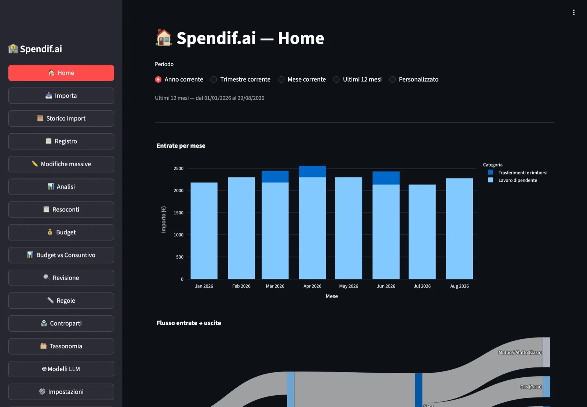
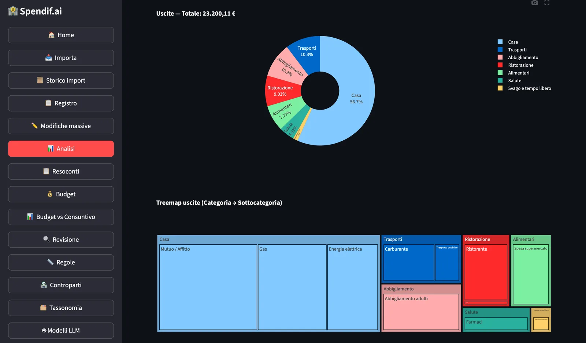

Importa i file di tutte le tue banche. Spendif.ai li unifica, elimina i doppi conteggi, classifica ogni transazione — e i tuoi dati non lasciano mai il tuo disco.
Python · Streamlit · SQLite · Ollama · nessun account richiesto
Ogni mese: scarica, apri Excel, incolla, aggiusta i segni, trova i doppioni. E ogni volta qualcosa non torna.
Tre file movimenti da tre portali bancari diversi, esportazioni CSV con strutture incompatibili, date in formati eterogenei, importi con segni inconsistenti. Unirli a mano richiede ore e genera sempre errori.
La spesa al supermercato appare nei movimenti della carta e nel conto corrente come addebito mensile aggregato. Sommando tutto, le tue spese sembrano il doppio di quelle reali. Nessuno strumento comune risolve questo automaticamente.
Un bonifico al conto deposito non è una spesa. Ma se importi entrambi i conti, lo stesso movimento appare due volte — come uscita dal corrente e come entrata sul deposito.
Classificare a mano 300 transazioni al mese è un lavoro impegnativo. Le app cloud lo fanno, ma inviano i tuoi dati bancari ai loro server e ti chiedono un abbonamento mensile.
Nessuna integrazione bancaria, nessun account, nessuna configurazione per tipo di file.
Esporta i movimenti in CSV o XLSX dal portale della tua banca. Funziona con qualsiasi banca italiana (e non solo) — Spendif.ai riconosce automaticamente il formato senza configurazione manuale.
Seleziona tutti i file insieme, anche da banche diverse, anche di anni diversi. Spendif.ai rileva il tipo di documento, corregge i segni, elimina i doppi conteggi tra carta e conto, classifica ogni transazione.
Il ledger unificato mostra tutto in un unico posto: grafici, filtri, esportazioni e la certezza che ogni euro viene contato una volta sola.
Tre schermate dell'app in funzione. I dati mostrati sono di esempio.


Non è un'app di gestione del budget generica. È progettata attorno ai problemi specifici di chi ha più conti bancari italiani.
Quando la carta di credito addebita l'importo mensile sul conto corrente, Spendif.ai riconosce la relazione e rimuove il doppio conteggio automaticamente.
Finestra temporale ±45 giorni · 3 fasi di abbinamento: finestra scorrevole → subset sum per importi frazionati → riconciliazione parziale
Un bonifico dal conto corrente al conto deposito non è né una spesa né un'entrata: è un trasferimento interno. Spendif.ai lo riconosce confrontando importi, date e nomi dei titolari nelle descrizioni — anche se i due file sono stati importati in momenti diversi.
Ogni transazione ha un ID univoco calcolato sul contenuto (SHA-256). Se importi lo stesso file due volte, non accade nulla. Puoi reimportare tutta la storia bancaria senza paura di duplicati.
La categorizzazione usa quattro livelli in sequenza:
Non è solo uno slogan. È l'architettura.
Spendif.ai usa llama.cpp in locale in modo predefinito: un motore di AI che gira sul tuo computer, senza connessione internet. I tuoi movimenti non lasciano mai il tuo disco. Ollama è disponibile come alternativa locale.
Se usi OpenAI o Claude, Spendif.ai rimuove automaticamente tutti i dati identificativi prima di qualsiasi chiamata remota:
Se il controllo fallisce, la chiamata viene bloccata — non viene degradata in silenzio.
I dati sono in un file SQLite sul tuo computer. Puoi copiarlo, spostarlo, farne backup come qualsiasi altro file. Nessun cloud obbligatorio, nessun account, nessun abbonamento.
Quattro profili che trovano in Spendif.ai qualcosa che le alternative non danno.
Conto corrente + carta di credito + conto deposito + conto trading? Spendif.ai li unifica tutti in un unico ledger senza dover fare nulla a mano.
Se usi Excel per le spese, Spendif.ai può sostituire quella routine: carichi i file una sola volta, Spendif.ai unifica e classifica, tu controlli solo le eccezioni.
Nessun backend remoto obbligatorio, nessun account, nessuna registrazione. I tuoi dati bancari restano dove devono restare: sul tuo computer.
Progetto open source Python con architettura modulare, pipeline LLM su dati strutturati, suite di test completa. Un punto di partenza per sperimentare o costruire integrazioni personalizzate.
App desktop nativa con AI locale inclusa. Niente Docker, niente terminale sempre aperto.
📥 Scarica l'installer (DMG · MSIX · .deb · .rpm)
Guida passo-passo con screenshot → installazione e primo avvio
— oppure, da terminale: —
Lo script rileva l'hardware, scarica il modello AI ottimale per la tua RAM (1–7 GB) e configura tutto — zero interventi manuali.
L'app appare in Launchpad / Start Menu / file manager, pronta all'uso.
Sviluppatore o installazione manuale? → Guida completa
Basta Docker Desktop. Container ufficiale da GitHub Container Registry, browser su http://localhost:8501.
🆘 Serve aiuto? Apri un'issue su GitHub — bug, domande, richieste di funzionalità.
⭐ Ti piace Spendif.ai? Lascia una stella — ci aiuta ad arrivare nei repository ufficiali (Homebrew Core, winget).
Nessun framework LLM (niente LangChain): i backend AI usano direttamente gli SDK ufficiali.
Implementa LLMBackend (3 metodi) e registralo in BackendFactory. Funziona con qualsiasi API compatibile OpenAI.
Flow 2 li riconosce automaticamente via LLM senza modifiche al codice. Lo schema viene salvato e riutilizzato nelle importazioni successive.
Dalla pagina Tassonomia, senza toccare il codice. La tassonomia è completamente configurabile dall'interfaccia.
La pipeline process_file() è completamente separata dall'UI — si può esporre via FastAPI senza modifiche.
winget install SpendifAi.SpendifAiLe aree dove il contributo è più utile:
Se la tua banca non viene riconosciuta automaticamente, apri un'issue con un campione CSV anonimizzato.
La suite copre il layer di logica di business, ma non ancora l'interfaccia Streamlit. C'è spazio per contribuire.
La UI è già internazionalizzata in cinque lingue (IT, EN, FR, DE, ES). C'è margine per aggiungerne altre.
La categorizzazione batch è il collo di bottiglia con LLM locale. C'è margine per parallelizzazione.